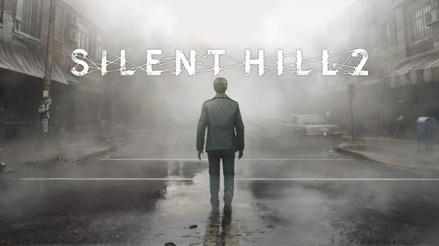

A franquia Resident Evil continua a surpreender os fãs ao redor do mundo com o anúncio de seu mais novo capítulo: Resident Evil Requiem. Ainda envolto em mistério, o título promete trazer de volta o clima sombrio e a tensão clássica que marcaram a série desde seus primeiros jogos. Prepare-se para novos cenários, personagens intrigantes e uma trama cheia de reviravoltas, em um universo onde o horror está sempre à espreita.
Por: Gabriel Santos
Ler Mais

O tão aguardado remake de Silent Hill 2 acaba de alcançar um feito impressionante: recorde de vendas em tempo recorde. Com gráficos atualizados, ambientação ainda mais densa e uma narrativa que mantém o peso psicológico do jogo original, o retorno à cidade envolta em névoa conquistou tanto os veteranos da franquia quanto uma nova geração de jogadores. Silent Hill prova, mais uma vez, que o medo pode ser atemporal.
Por: Gabriel Santos
Ler Mais

Os rumores estão cada vez mais fortes: Alone in the Dark, um dos pioneiros do gênero survival horror, pode finalmente ganhar uma sequência oficial. Com o recente interesse por remakes e reimaginações de clássicos do terror, os fãs especulam que a lendária franquia está pronta para voltar aos holofotes. Será que uma nova geração de jogadores conhecerá o terror que marcou época? Só o tempo dirá, mas as expectativas já estão altas.
Por: Gabriel Santos
Ler Mais